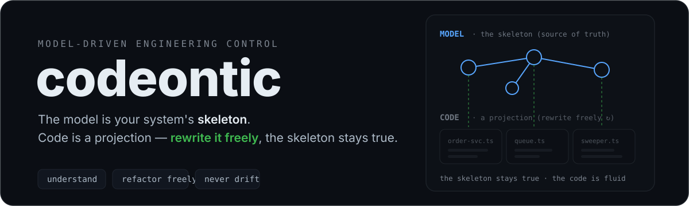
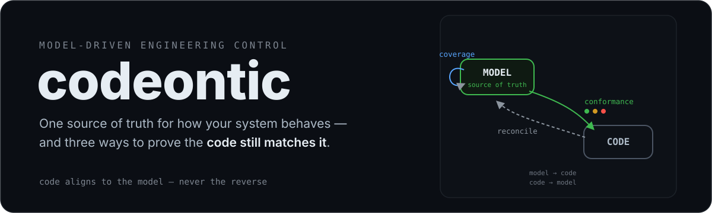
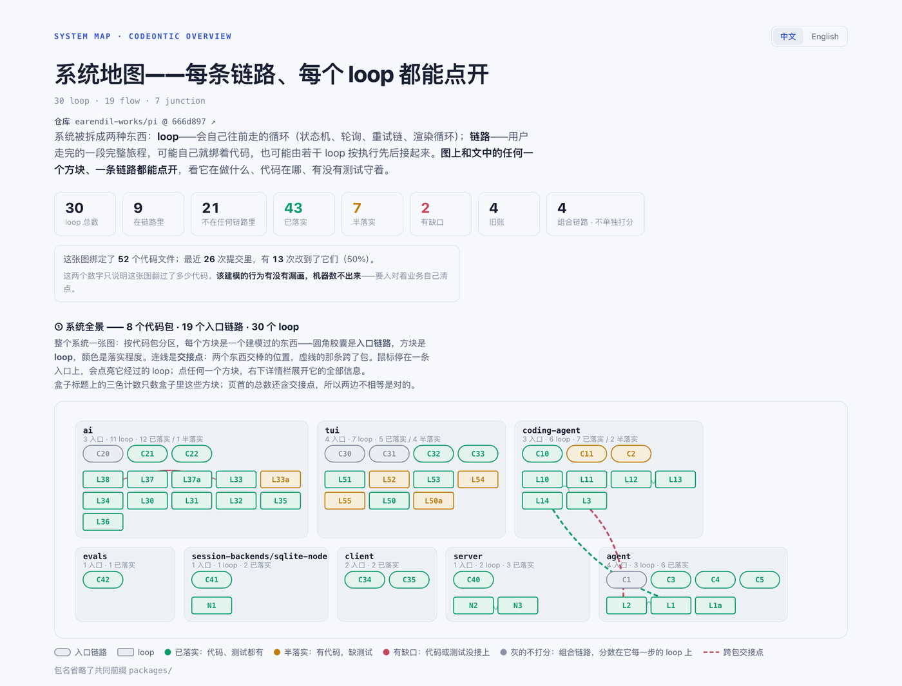

deterministic · zero-LLM gate · open source
人审模型，agent 写码。
Humans review the model. Agents write the code.
codeontic 在代码之上建一层逻辑建模——像汇编之上建高级语言一样。流程、循环、模块交接点、测试覆盖，全部建成结构化模型，锚定到真实代码符号上。建模才是真相源，代码只是投影，随时可以重写。
codeontic builds a logic model above your code — like high-level languages above assembly. It models system behavior with a fixed ontology (loops, flows, junctions, scenarios, debts), anchored to real code symbols, verified on every PR. You don't read every line; you still know what the system does.

Background
这个项目从一次质疑开始
This project started with a challenge
我们团队很早就用 AI agent 写日常代码。有一次跟运维同学沟通项目细节，发现自己答不上来——agent 写的东西太多了，很多逻辑我们自己也说不清。运维同学直接说："最终还是要人控制 AI，不能让 AI 控制了咱。"
Our team adopted AI agents for day-to-day coding early on. One day, discussing project details with the ops team, we realized we couldn't answer their questions — agents had written so much code that we'd lost track of the details. Their response was blunt: "Humans need to stay in control of the AI, not the other way around."
他说得对。但回头让人手写代码，效率不允许——这条路走不回去。问题不是要不要用 AI，而是用了之后，怎么不丢掉对系统的掌控。
They were right. But going back to writing everything by hand wasn't an option either. The question wasn't whether to use AI — it was how to keep your grip on the system after you do.
codeontic 就是为了回答这个问题。不是限制 agent，是在代码之上建一层人能审、机器能核对的逻辑模型——你不需要读每一行代码，但你仍然知道系统在做什么。
codeontic was built to answer that question. Not by restricting agents, but by building a logic model above the code — one that humans review and machines verify. You don't read every line, but you still know what the system does.
The problem
代码量在涨，人的理解力没有跟上
Code grows; your understanding doesn't keep up
单仓越来越大
Repos keep growing
几十万行代码，agent 一次读不完，人也不可能从头看一遍。
Hundreds of thousands of lines — too much for an agent's context, and nobody reads it end to end.
行为散落各处
Behavior is scattered
队列消费、定时器、重试链、状态机——系统真正的行为藏在代码各个角落，没有一个地方完整写着"它应该怎么运转"。
Queue consumers, timers, retry chains, state machines — real behavior hides in corners, and nothing states end to end how the system is supposed to run.
agent 写的码没人审
Nobody reviews agent code
agent 产出快，人不再逐行读。脑子里那张系统图很快就旧了——但你还得靠它做技术决策。
Agents produce fast; nobody reads line by line. Your mental picture of the system goes stale — but you still need it to make technical decisions.
The approach
像汇编之上建高级语言一样，在代码之上建一层逻辑模型
Build an abstraction layer above code, like a high-level language above assembly
codeontic 用五种节点——loop（循环）、flow（链路）、junction（交接点）、scenario（场景）、debt（旧账）——给系统行为建模。每个节点锚定到真实的代码符号上，每条场景指向真实的测试。模型就是真相源：代码只是它的投影，可以随时重写。
codeontic models system behavior with five node kinds — loop, flow, junction, scenario, debt — each anchored to real code symbols, each scenario pointing at a real test. The model is the source of truth; code is its projection and can be rewritten at will.

01
高频重构，低压力
Refactor often, stress-free
代码怎么改都行——改完跑 conformance，它逐条告诉你结构还在不在。重构的压力从"怕出事"变成"跑一遍就知道"。
Rewrite anything — conformance tells you piece by piece whether the structure survived. Refactoring goes from "afraid to break things" to "run and see."
02
给人做技术决策参考
Inform human decisions
系统里有什么循环在跑、逻辑怎么流转、哪里没有测试守着——一张图摆在面前，做架构决策有据可依。
What loops are running, how logic flows, where nothing guards — a map on the table so architectural decisions have evidence behind them.
03
给 agent 快速查逻辑
Fast logic lookup for agents
agent 不用从头读几十万行代码——查模型就知道这个系统的结构、哪些行为已建模、哪些还有缺口。
Agents don't need to read hundreds of thousands of lines — query the model to know the system's structure, what's modeled, and where the gaps are.
04
PR 阶段校验对齐
PR-stage alignment checks
每次 PR 自动核对代码和模型的对齐度。门禁确定性运行，亚秒出结果，不调 LLM，不跑你的代码。
Every PR automatically checks code-to-model alignment. The gate is deterministic, sub-second, and never calls an LLM or runs your code.
Showcase
实测：670 个文件的仓库，整仓建模
Real test: a 670-file repo, modeled whole
earendil-works/pi，一个公开的 agent 工具仓库。5 次并行 agent 会话建模，一次人工合并裁决。
earendil-works/pi, a public agent-harness monorepo. 5 parallel agent sessions, then one human pass to merge and adjudicate.

Quick start
npx codeontic init # model skeleton + agent kit + /codeontic skill front door npx codeontic check . --repo-root . --strict-anchors # deterministic gate (sub-second, zero-LLM) npx codeontic conformance . --repo-root . # met / partial / gap report card npx codeontic overview . --repo-root . # the interactive system map
init 在你的仓库里写出模型骨架和一套 agent 指令。agent 照着它扫代码、识别行为、起草模型节点。你审核之后才落库——机器发现，人来裁决。
init writes a .codeontic/ skeleton and an agent kit: instructions a coding agent in your repo follows to discover behavior and draft the model. You review the drafts; nothing lands unverified.